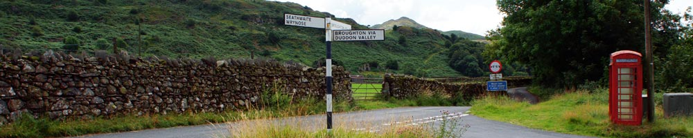
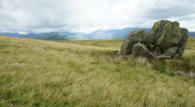
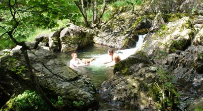
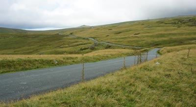
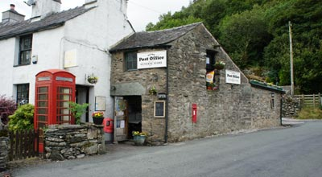
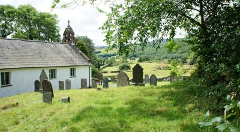
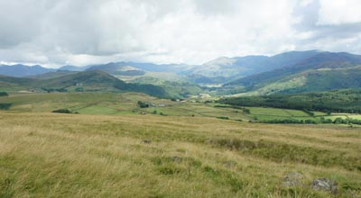

The Duddon Valley
 |
   |
The beauty of the Duddon Valley, close to Broughton-in-Furness, is a landscape celebrated by William Wordsworth in several of his sonnets and in the verse of local born poet, Norman Nicholson.It's a tranquil remote wild region of the Lake District and Cumbria where walkers, climbers, cyclists and Nature lovers can roam and discover a sense of refreshment amid scenery which has changed little over the years. Through it flows the River Duddon which rises at the highest point of Wrynose Pass to begin a 15 mile journey to the Duddon Estuary and the sea. The main village communities of Duddon Valley are Seathwaite (do not confuse with Seathwaite in the Borrowdale Valley near Keswick) and Ulpha. Seathwaite has a traditional 16th C pub and the 16th C Holy Trinity Church whilst Ulpha has a well stocked combined village store and Post Office. For truly dramatic views there are few better than those of Great Gable and Scafell on a road journey from Ulpha over Birker Fell into Eskdale. Access to the woodlands, fells, streams and drystone walls of the Duddon Valley is along twisting minor roads barely 2 metres wide in places with limited passing places and none are suitable for caravans. Motorists and cyclists should be aware of sheep grazing on the roadsides. All types of visitor accommodations are available in the valley providing an all year round welcome to one of the Lake District and Cumbria's picturesque settings. |
Places of interest and local information |
|
 |
Ulpha Post Office and Village Store Ideal for visitors and travellers. Open 6 days a week all year round selling tinned foods, fresh meat, vegetables, fruit, milk, cigarettes, tobacco, newspapers, postcards, souvenirs and is able to provide tourist information. |
Seathwaite Holy Trinity ChurchA memorial plaque mounted on a stone at the entrance to the church is in memory of Robert Walker who was vicar for 66 years and known as “Wonderful Walker” because of his long ministry. |
Fell Races The Long Duddon is a fell race of 18 miles over a route at the head of the Duddon Valley with 6000 feet of ascents over Harter, Hardknott, Swirl how, Dow Crag, White Pike and Caw. |
 |
St John the Baptist Church, UlphaA small simple place of worship. |
Seathwaite TarnThe third largest tarn in the Lake District and Cumbria. |
Devoke WaterOne of the highest tarns in the Lake District and Cumbria. It is stocked with Brown Trout and some Perch. Best reached from Birker Fell. |
Fishing PermitsCheck with The Newfield Inn, Seathwaite; Ulpha Post Office; Broughton-in-Furness Tourist Information Centre or Millom Angling Club. www.millomanglers.co.uk |
Car parkingThere are spaces next to Seathwaite Parish Room. A donation of just £2 is requested. Put the money through the slot in the entrance door to the building. Otherwise there are some opportunities for roadside parking along the valley, more so on the stretch between Duddon Bridge and Ulpha. |
 |
WalkingPopular hikes are to Coniston Old Man, Scafell, Dow Crag and Harter Fell together with the less challenging ones to Seathwaite Tarn and Devoke Water. Stepping Stones and Memorial Bridge. For 30 walks in this postcode area of LA20 |